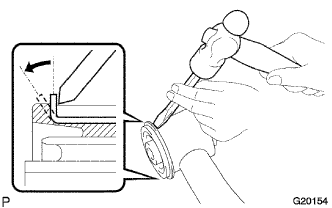

ПЕРЕДНИЙ ВЕРХНИЙ РЫЧАГ ПОДВЕСКИ > РАЗБОРКА |
| 1. СНИМИТЕ ВТУЛКУ ЛЕВОГО ВЕРХНЕГО РЫЧАГА ПЕРЕДНЕЙ ПОДВЕСКИ |
|  |
С помощью зубила и молотка отогните фланец по всему периметру втулки верхнего рычага, как показано на рисунке.
С помощью SST и пресса выпрессуйте втулку.
| 2. СНИМИТЕ ПЫЛЕЗАЩИТНЫЙ ЧЕХОЛ ЛЕВОГО ПЕРЕДНЕГО ВЕРХНЕГО ШАРОВОГО ШАРНИРА |
 |
С помощью съемника стопорных колец снимите установочное кольцо пылезащитного чехла и пылезащитный чехол с верхнего рычага.